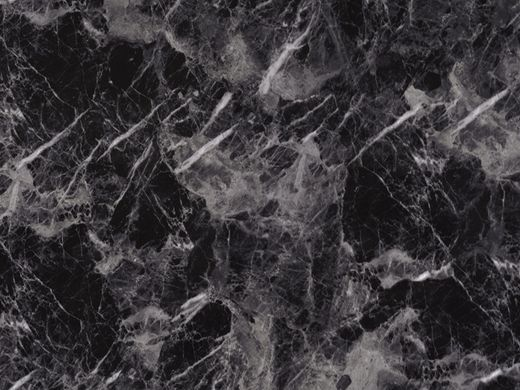
IP401
Black Veined Marble Interior Film
Elegant black veined marble interior film with bold white veining, ideal for luxury walls and countertops.
Roll size 1.23m x 50 m
KOINTEC 27/28 · 22 finishes
KOINTEC marble and stone interior film brings veined marble, natural stone and brick to reception desks, columns, feature walls, counters and furniture at a fraction of the weight of real stone. This page lists every Stone & Marble finish in the KOINTEC 27/28 catalogue with its code: white and grey marbles with fine or gold veining, warm beige stones, premium stone textures and brick. Each finish is shown as a swatch and, where available, in an interior, so you can judge the vein and colour before you order.
Marble · Stone · Premium Stone · Brick
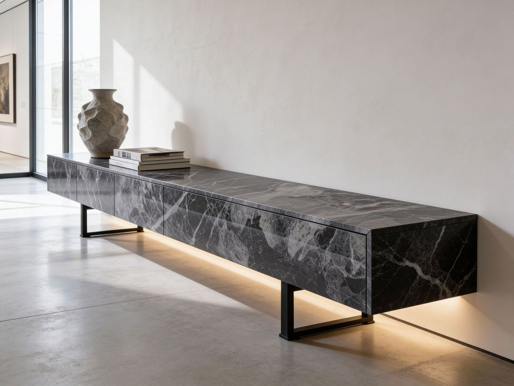



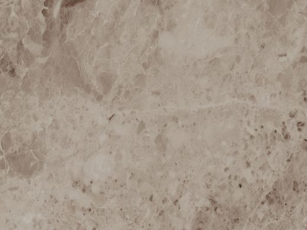
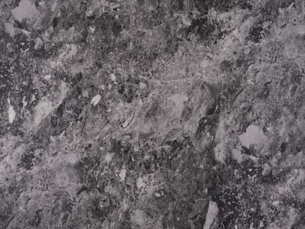
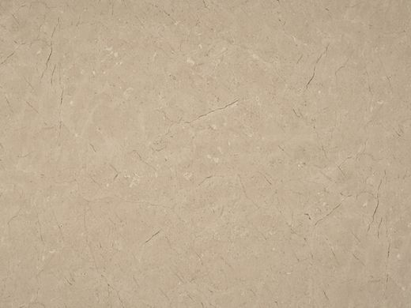
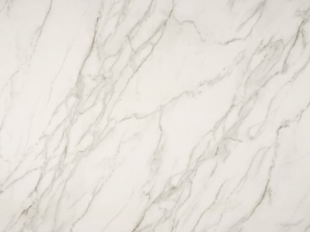
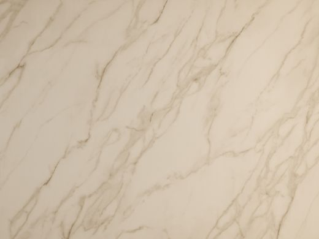
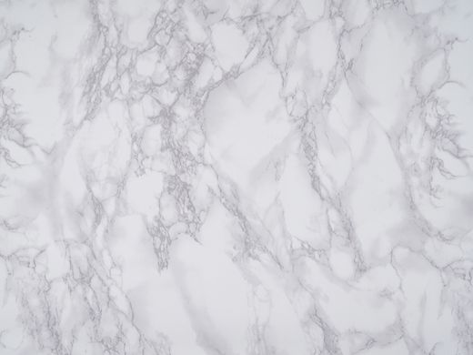
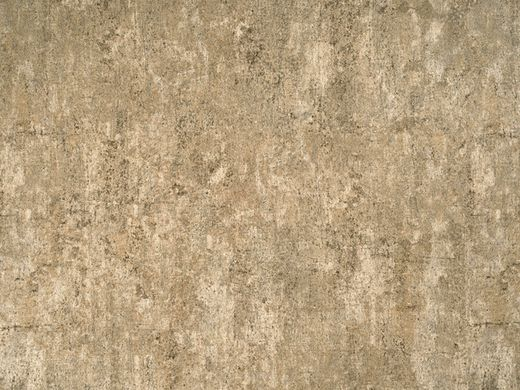
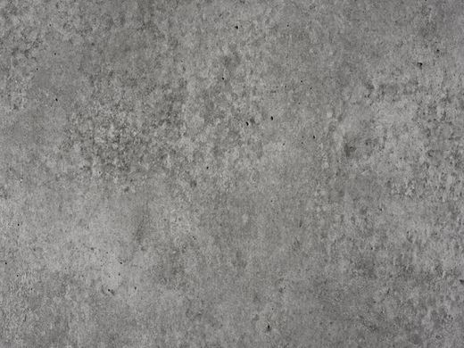
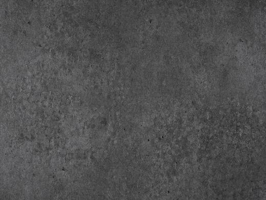
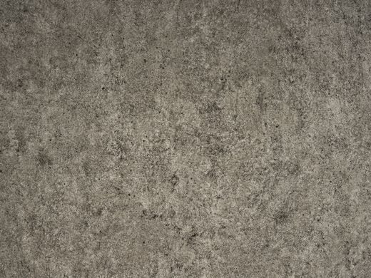
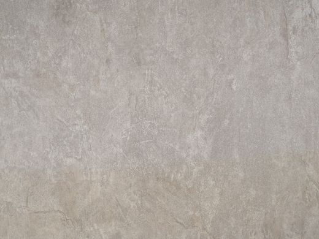
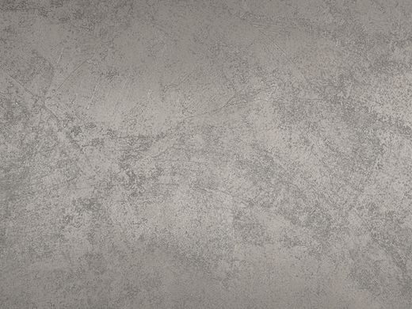
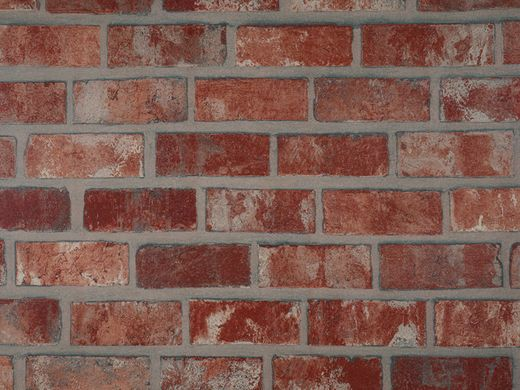
It is a self-adhesive architectural film, made in Korea, that gives existing surfaces such as cabinets, doors, walls and furniture a stone & marble finish without replacing them.
22 finishes across Marble, Stone, Premium Stone, Brick. Each one is listed on this page with its product code.
From XESS Trading LLC in Al Quoz, Dubai, the authorized KOINTEC distributor in the UAE since 2016, through interiorfilm.com. We also supply Saudi Arabia and Qatar.
Send the product codes you like to our team through the contact page on interiorfilm.com, by WhatsApp on +971 55 217 8882 or by email to info@xesstrading.com.